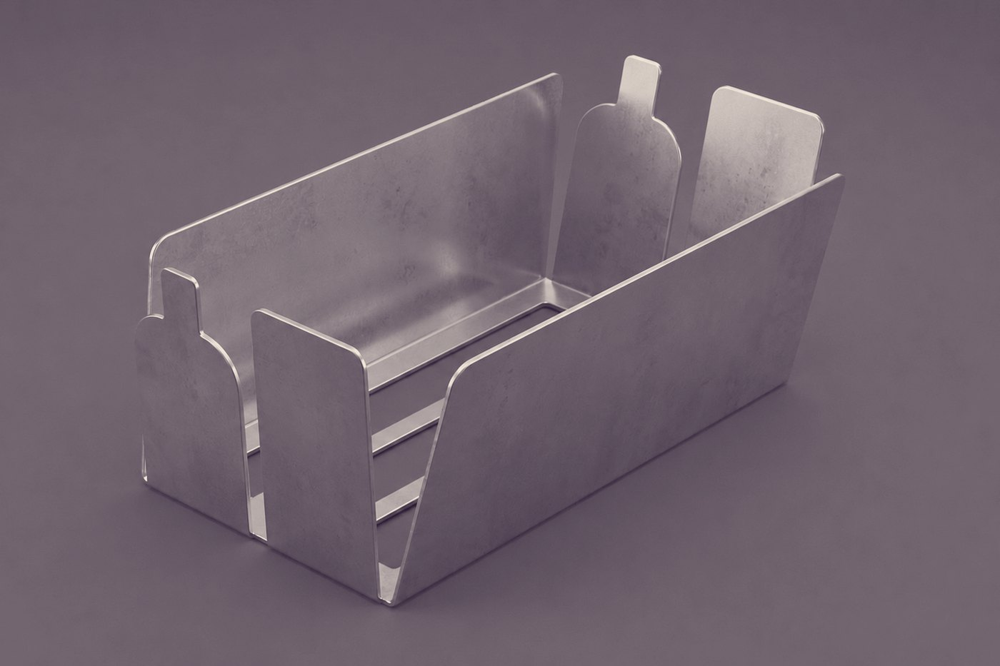
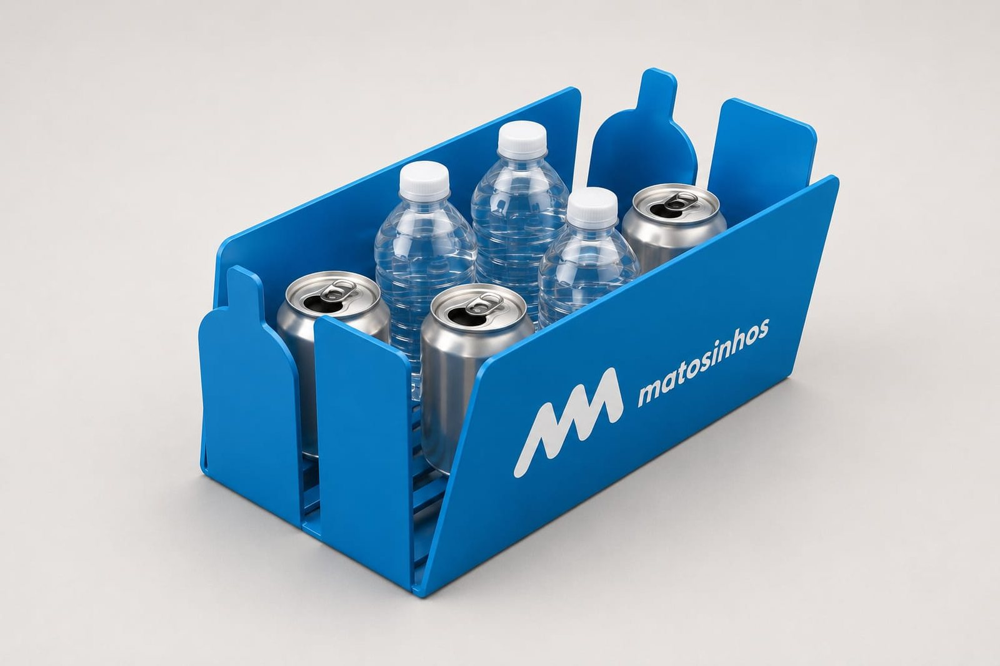

O voltinha que fecha o ciclo
Um suporte em aço inox para as papeleiras que já existem, onde se doa o depósito Volta e ninguém tem de revirar o lixo.
Concebido e fabricado em Portugal

VOLTINHA-100 · protótipo em aço inox
As papeleiras estão a ser despejadas nas ruas
Desde abril de 2026, cada garrafa e cada lata valem dez cêntimos. A papeleira da esquina deixou de ser um caixote e passou a ser um cofre.
€0,10
dentro de cada papeleira, e é por isso que são abertas
100 M
embalagens devolvidas nos primeiros três meses do sistema Volta
38%
taxa de recolha estimada em julho, e a crescer
«Mais do que medidas sancionatórias, impõem-se adaptações ao sistema.»
Fontes: ECO, 27/07/2026 · Observador, 10/07 e 21/07/2026
Doa-se o depósito em vez de o deitar fora
1 · Um munícipe doa-a
Pousa em vez de deitar fora
Quem não quer os €0,10 de volta deixa a garrafa ou a lata num voltinha. Uma pequena doação, sem desvio.
2 · Alguém a recolhe
Levada à mão, nunca escavada
Quem vive do depósito, um vizinho, ou as equipas de limpeza do município.
3 · Um quiosque Volta paga
O ciclo fecha-se fora do lixo
A embalagem é devolvida e os €0,10 ficam para quem a levou até lá.

As embalagens doadas ficam bem à vista, por isso recolhê-las leva segundos. Ninguém abre a papeleira, ninguém espalha nada no chão.
Simulação ilustrativa nas cores do município do Porto. Não implica acordo nem endosso.
Dignidade, ruas mais limpas, menos queixas
Dignidade para quem recolhe
A embalagem doada é tirada de um suporte, não de dentro do lixo. Sem escavar à vista de quem passa.
Ruas mais limpas
As papeleiras ficam fechadas e de pé, por isso o que está dentro delas fica lá dentro.
Menos queixas
As juntas de freguesia passam a ter uma resposta para dar aos moradores.
Opcional: os reembolsos podem ser canalizados para uma instituição social local, à escolha do município.
VOLTINHA-100: feito para a rua
- Serve as papeleiras que já tem Braçadeira universal para papeleiras de 300–450 mm. Sem obras, sem substituir equipamento urbano.
- Instala-se em minutos Uma equipa, apenas ferramenta manual. Sem fundações, sem energia, sem interromper o serviço.
- Material e construção Aço inox AISI 304, chapa única quinada, 279 × 139 × 116 mm. Resistente a intempéries e vandalismo.
- Fabricado em Portugal Produzido localmente: prazos de semanas e reposições que não ficam retidas numa fronteira.
- Acabamento Inox natural ou painel frontal pintado na cor do município.

Silhuetas recortadas a laser: legível à distância, sem instruções.

Nas cores do seu município. Simulação ilustrativa, sem acordo nem endosso.
200 papeleiras, 6 meses, números publicáveis
Um piloto pequeno o suficiente para ser reversível e grande o suficiente para produzir dados. Cabe inteiro num ajuste direto.
€15–28 mil
preço fixo para 200 papeleiras: levantamento, fabrico, instalação, monitorização e relatório
€75 mil
limite do ajuste direto (CCP revisto, abril de 2026). O piloto usa menos de 40%
1 assinatura
decisão do órgão competente com base num orçamento. Sem júri, sem plataforma
≈8 horas
do vosso serviço: uma visita técnica, um percurso pelas zonas críticas, uma formação breve
Nenhum risco do seu lado
Instalação certificada, seguro de responsabilidade civil e substituição de unidades danificadas dentro do preço fixo.
Indicadores acordados à partida
Papeleiras intactas, embalagens doadas, ocorrências de higiene e custo de limpeza evitado.
Reversível
Se os números desiludirem, o piloto acaba ali. Nada fica comprometido.
Informação de enquadramento, não constitui parecer jurídico. Cada município deve confirmar o procedimento com os seus serviços de contratação.
Um email seu vale mais do que dez apresentações nossas
As juntas de freguesia e as câmaras decidem a partir daquilo que os residentes lhes dizem. Deixámos a carta feita: escolha o destinatário, preencha dois campos e envie.
«Existe uma solução já testada há anos noutros países e agora adaptada a Portugal: um suporte de aço que se fixa às papeleiras existentes.»
Do modelo de email, versão curta.
Comecemos por uma hora
Uma visita técnica aos vossos serviços, sem compromisso. Medimos as papeleiras reais e ouvimos as equipas. Se for cidadão, escreva também.
Florian Rehm · Portugal · VOLTINHA-100, protótipo em aço inox AISI 304